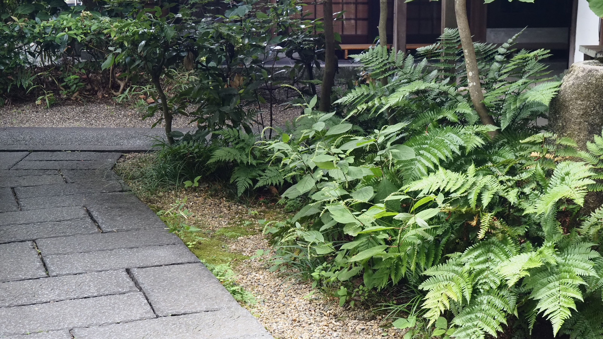

建物の記憶と名水が、心をほどく。
STORY OF WATER & ARCHITECTURE
京都三名水の一つ「染井」がもたらす、清らかでやわらかな珈琲の味わい。
そして、宮中より受け継がれた歴史的建築「旧春興殿」が紡ぐ静謐な時間。
その二つが重なり合う場所で、私たちは特別なひとときをお届けします。
京都三名水「染井の水」
京都三名水の中で唯一現存する「染井の水」。古くより御所の染所にも使われてきたこの湧き水は、雑味がなく、やわらかな甘みを含んでいます。
Coffee Base NASHINOKIでは、すべてのドリンクのベースにこの水を使用。命を吹き込まれた名水が、コーヒー豆本来の個性を優しく引き出します。

歴史的建築「旧春興殿」
大正期に宮中より梨木神社へと移築された歴史ある「旧春興殿」。かつて茶之湯が楽しまれたその趣ある意匠を極力残し、現代のコーヒー文化を発信する空間へと生まれ変わらせました。
床や間仕切り壁を再構築しつつも残された木の温もりが、慌ただしい日常を忘れさせ、あなたを深い静寂へといざないます。